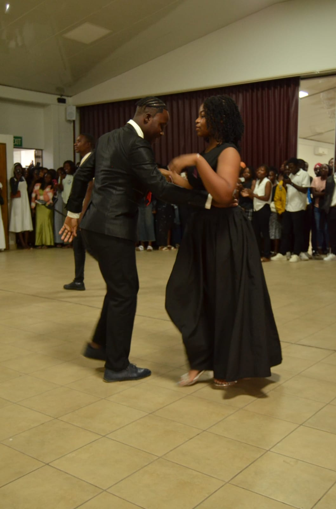
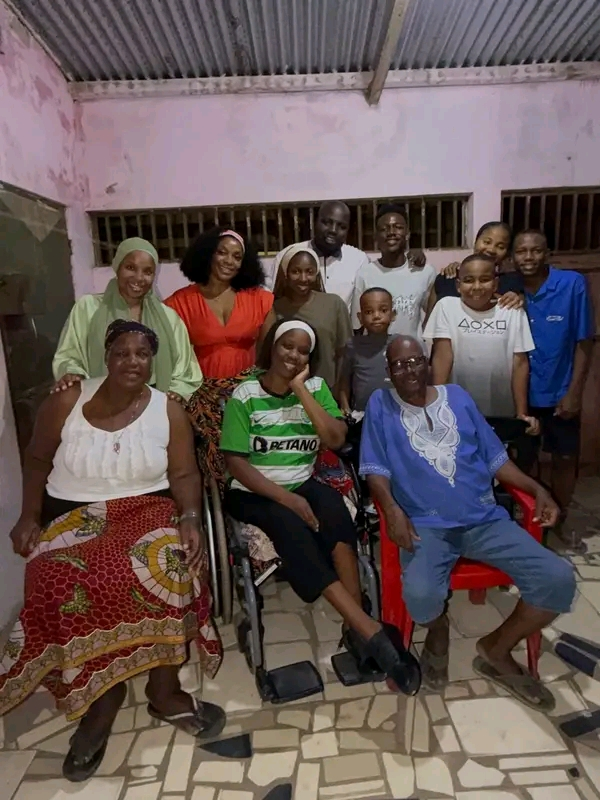
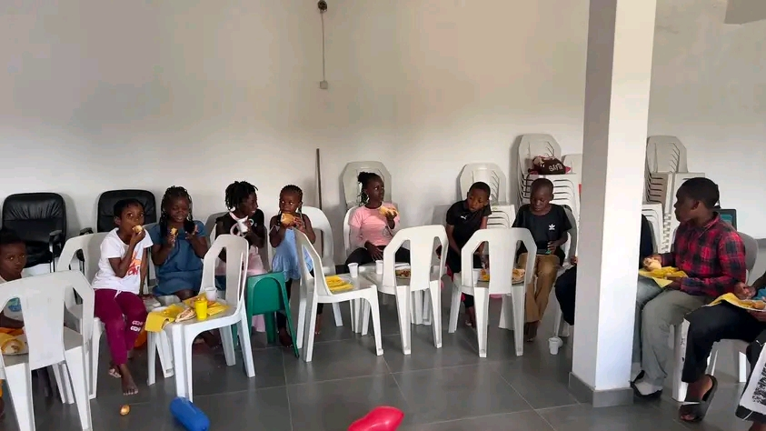
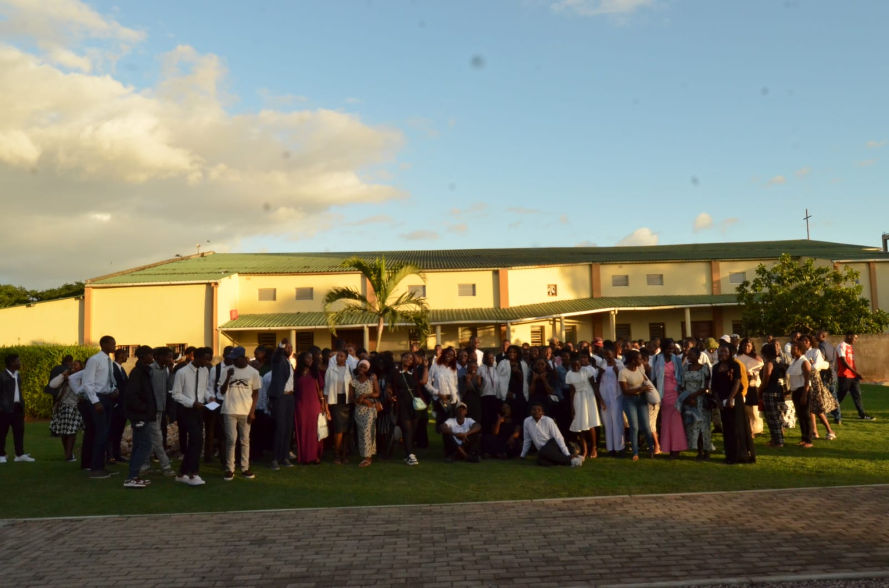

Youth and Family Programs
T3 Ward offers programs designed to strengthen youth, families, and children. These programs help members grow spiritually, socially, and emotionally.

Youth Programs
- Spiritual classes and youth meetings
- Leadership and personal development activities
- Community service projects
- Sports and recreational activities

Family Programs
- Family home evenings
- Marriage and relationship strengthening classes
- Family counseling and support activities
- Community and family bonding events

Children (Primary) Programs
- Sunday learning classes
- Music and fun educational activities
- Basic gospel teachings
- Creative and interactive learning

Our Goal
The goal of these programs is to build strong families, develop responsible youth, and create a loving and united community.
